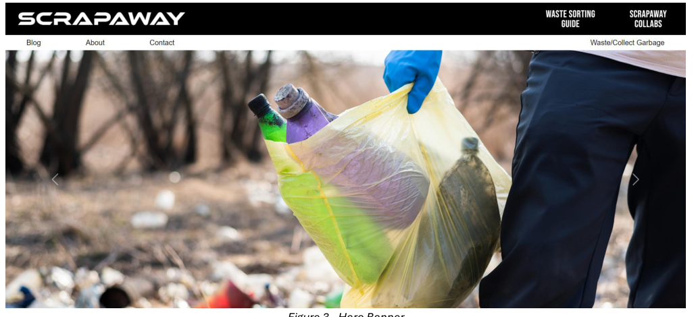
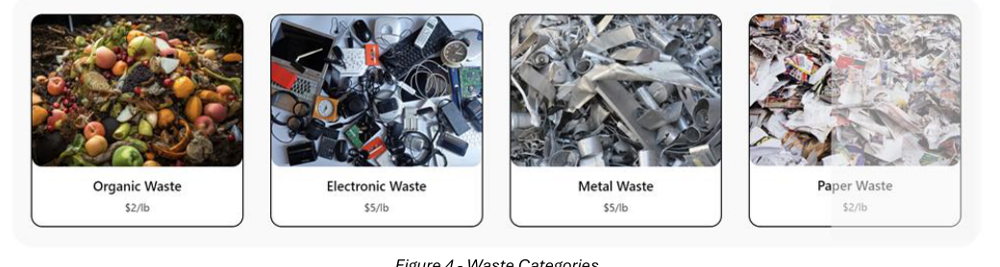
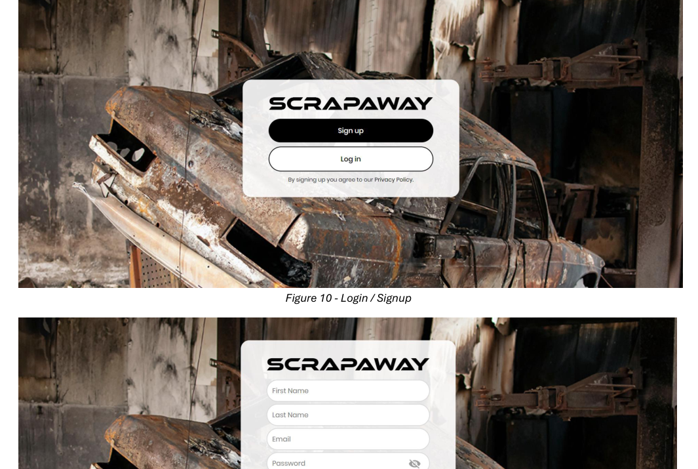
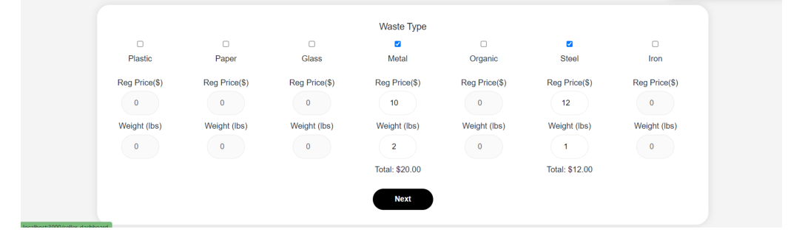
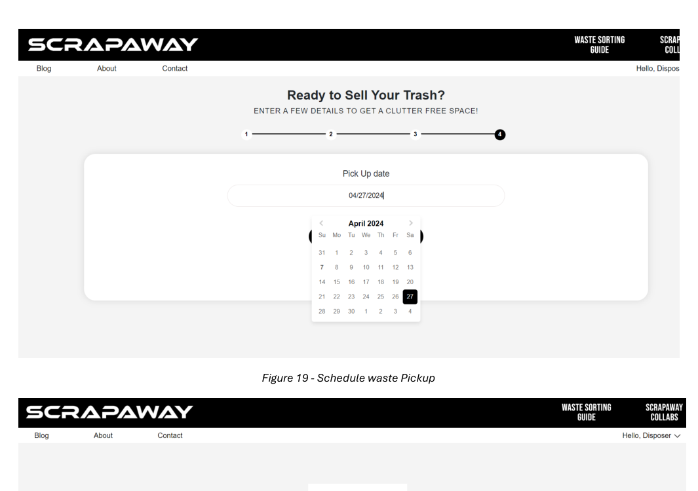
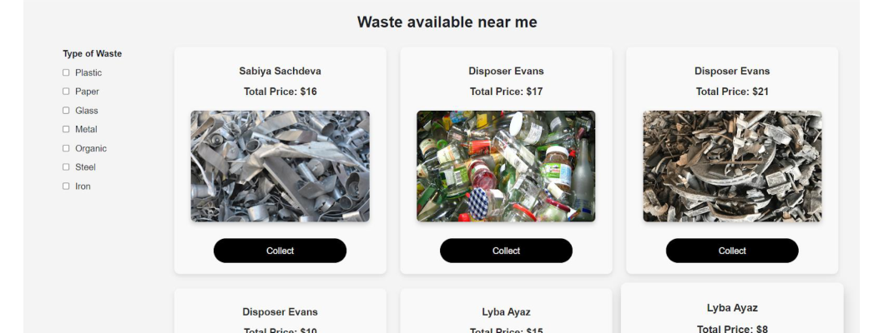
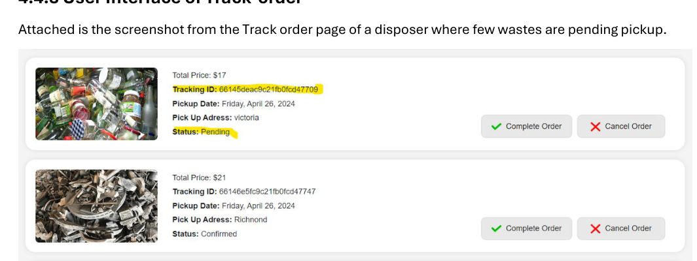
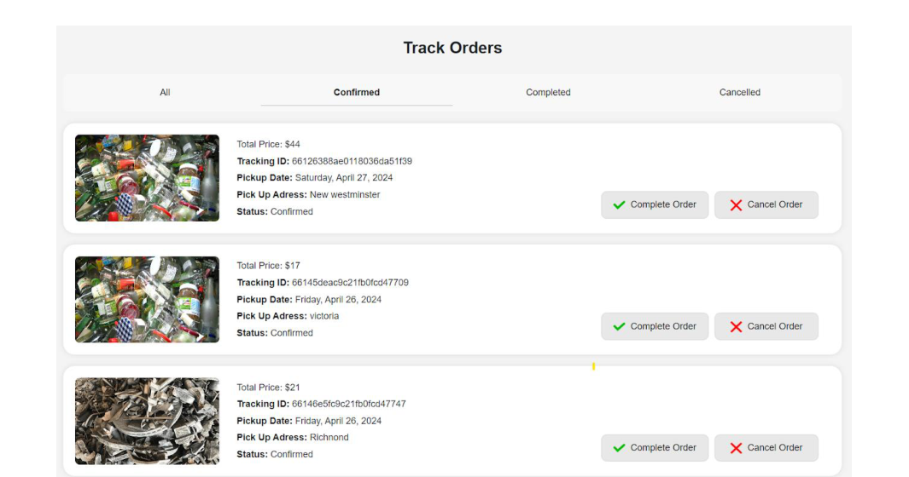
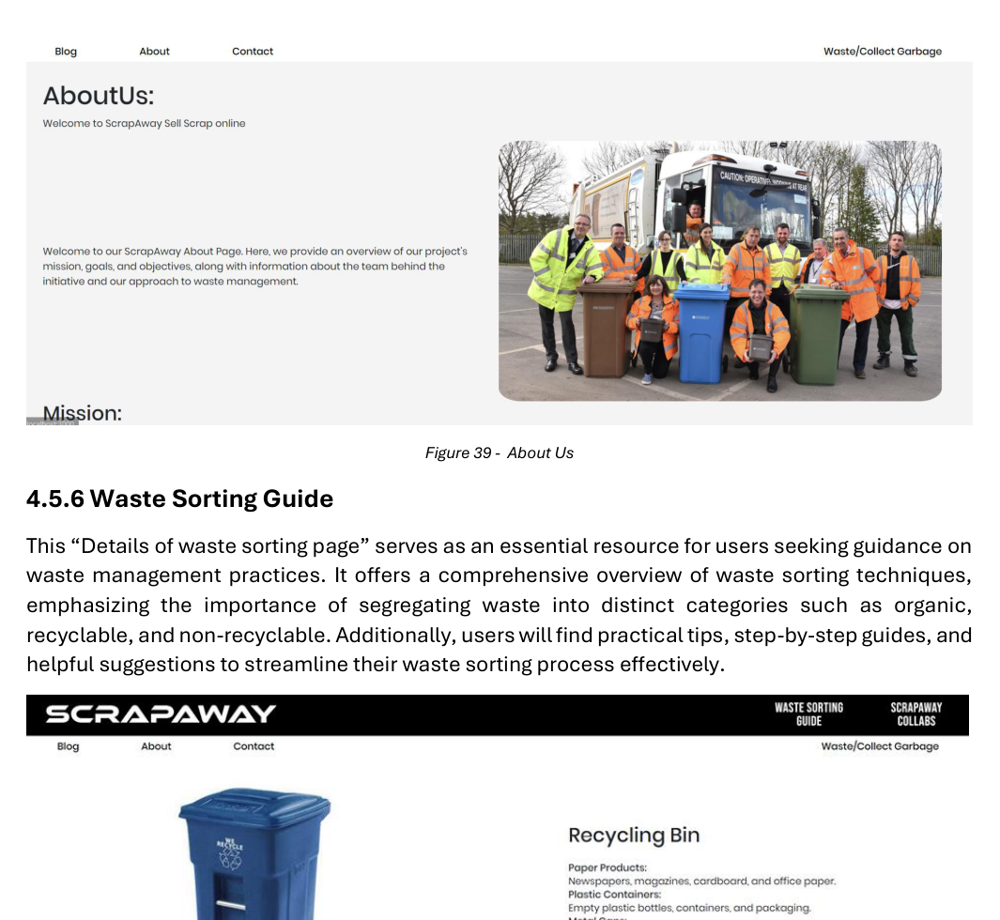

A two-sided waste pickup platform that I worked on across UX/UI design and front-end implementation. I designed the disposer and collector journeys, then focused my front-end contribution on the collector-side experience as part of the team build.

The identity was created as part of the project so the platform had a distinct visual presence from the beginning, rather than relying on a generic wordmark.
I designed the ScrapAway logo alongside the product so the identity and interface could feel like parts of the same system.
ScrapAway connects people who need to dispose of solid waste with collectors who can pick it up. That meant designing one platform with two different priorities: a simple booking flow for disposers and a clear request-management flow for collectors.
The project focused on making pickup requests easier to schedule while giving both sides better visibility into what happens after a request is created.
Users need to understand what they can dispose of, enter the right pickup details and know what happens next.
Collectors need a clear way to review available pickups, understand the waste details and manage active jobs.
Both user types need reassurance that a request has been saved, confirmed and moved forward.
The original project explored local disposal pain points through surveys, municipal services and waste-management research. The source file does not document participant counts or detailed survey findings, so this case study stays focused on the needs that were carried into the product structure.
I structured the experience around the handoff between the disposer and collector rather than treating them as completely separate products.
Each part of the interface is tied to a specific moment in the service instead of being presented as a collection of unrelated screens.
The homepage introduces the service and brings waste categories forward early so users can understand what the platform handles before starting a booking.


Authentication separates the disposer and collector roles so each user reaches the tools and dashboard that match what they need to do.
The disposer flow collects the waste type, reference image, pickup details and schedule without forcing everything into one dense form.



The collector dashboard brings available pickups, waste details and request information into one place so collectors can review what they are accepting before confirming it.
Tracking screens show whether the pickup is pending, confirmed, completed or cancelled so users do not have to guess what happened after booking.



Waste-sorting guidance gives users useful information around responsible disposal instead of making the product end at the transaction.
The green, cream, sand and brown palette supports the sustainability theme, while the layouts stay restrained enough for dashboards and operational information.
ScrapAway was completed as a team build. After working through the product structure and interface design, my front-end contribution focused primarily on the collector side: the dashboard, request review, pickup details, filters and status-driven actions.
I worked on the disposer and collector journeys, interface structure, visual direction and the screens that connect a pickup request from booking through tracking.
As part of the implementation team, I focused on making collector-side requests easier to scan, review and manage while keeping the interface consistent with the broader product.
The collector interface needed enough information to support a decision without turning every pickup request into a wall of details.
The dashboard organizes requests into a scannable layout so collectors can compare jobs, review the relevant pickup information and decide what to accept.
Once the flow moved beyond static mockups, status changes became part of the interface problem. Pending, confirmed and completed requests needed to remain understandable as the same pickup moved through the system.
The tracking views separate requests by status so the current state stays obvious instead of disappearing once the booking step is complete.
The technical stack mattered, but the more useful learning came from seeing how forms, shared patterns, changing data and responsive layouts affect decisions that look simple in a static design file.
I worked with Bootstrap and CSS layouts so cards, forms and dashboard content could adapt without losing the reading order of the page.
Shared treatments for forms, status areas, navigation and cards helped the interface stay consistent across different parts of the service.
Pickup records and status views needed to work with changing application data instead of assuming every screen would always contain the same content.
The project used a MERN-stack foundation. My front-end work was primarily in React, Bootstrap and CSS, while the team application connected to shared Node, Express and MongoDB services.
The project helped me connect product thinking with implementation. Designing the two-sided service made me think about roles, handoffs and status. Building the collector experience then made those decisions more concrete because the interface had to respond to forms, changing data, reusable components and real application states.
Continue into other UX and digital projects without repeating the same ScrapAway story twice.